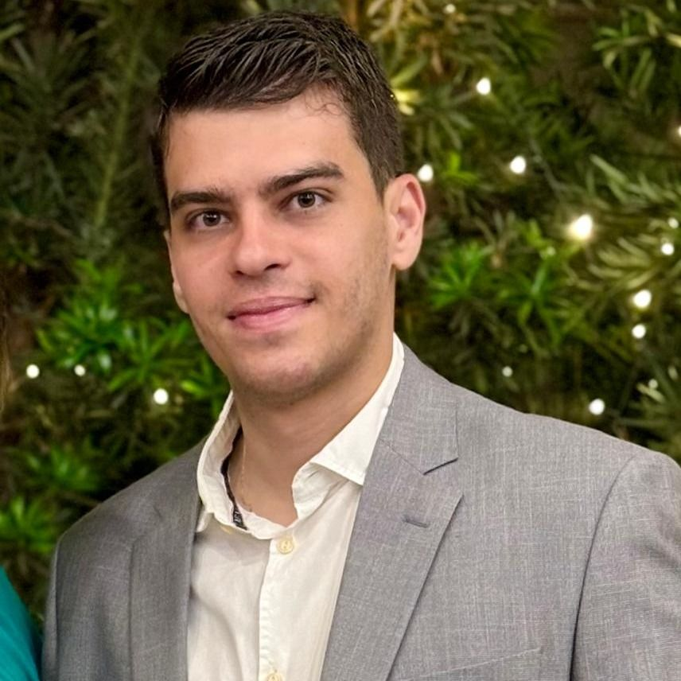

Hematologia • Uberaba — MG
Avaliação médica em Hematologia Geral, com atenção individualizada para alterações nos exames, sintomas e condições relacionadas ao sangue.

Dr. Breno Lacerda de Souza — Médico Hematologista
Você se identifica com isso?
Nem toda alteração em um exame significa algo grave. Porém, quando um resultado foge do esperado ou determinadas alterações aparecem de forma persistente, uma avaliação médica especializada pode ajudar a compreender melhor o quadro.
Hemograma alterado
Anemia persistente ou recorrente
Alterações nas plaquetas
Alterações nos leucócitos
Sangramentos frequentes
Hematomas sem causa aparente
Alterações na coagulação
Histórico de trombose
Necessidade de investigação hematológica
Entenda a especialidade
A Hematologia é a área da medicina dedicada à avaliação de alterações e doenças relacionadas ao sangue, células sanguíneas, medula óssea, coagulação e sistema linfático.
Uma avaliação hematológica considera não apenas os resultados dos exames, mas também os sintomas, o histórico clínico e as características individuais de cada paciente.
"Informação, investigação e acompanhamento médico fazem parte de uma avaliação cuidadosa."
Áreas de atuação
O atendimento é direcionado à investigação e ao acompanhamento de diferentes alterações hematológicas.
Avaliação de alterações identificadas em exames de sangue que necessitem de investigação especializada.
Investigação das possíveis causas e acompanhamento de casos de anemia, conforme a avaliação médica.
Avaliação de alterações na quantidade ou em outros aspectos relacionados às plaquetas.
Investigação de alterações persistentes ou relevantes identificadas nos exames.
Avaliação médica de alterações relacionadas aos mecanismos de coagulação do sangue.
Investigação e acompanhamento de situações relacionadas à formação de coágulos, quando indicado.
Avaliação de episódios recorrentes de sangramento ou hematomas sem causa aparente.
Investigação de outras alterações relacionadas ao sangue, conforme a necessidade de cada paciente.
As condições avaliadas devem ser confirmadas e ajustadas conforme a atuação clínica do profissional.
Sobre o especialista
Atuando em Hematologia Geral, o Dr. Breno Lacerda de Souza oferece avaliação especializada para pacientes que precisam investigar alterações relacionadas ao sangue ou realizar acompanhamento hematológico. A consulta busca compreender o contexto de cada paciente — sua história clínica, sintomas e exames disponíveis — para orientar os próximos passos.
Diferenciais
Atendimento direcionado à investigação e ao acompanhamento de alterações e condições relacionadas à saúde hematológica.
Cada paciente possui uma história, sintomas e exames diferentes. A avaliação considera o conjunto dessas informações.
Uma consulta médica também envolve escuta, esclarecimento de dúvidas e comunicação clara.
A análise dos sintomas, histórico e exames ajuda a direcionar a avaliação conforme as particularidades de cada caso.
Facilidade para pacientes de Uberaba e região que procuram atendimento especializado em Hematologia.
Passo a passo
Entre em contato pelo WhatsApp e fale com nossa equipe para consultar horários e disponibilidade.
Durante o atendimento, são conversados seus sintomas, histórico clínico, queixas e exames relevantes.
As informações apresentadas são analisadas dentro do contexto individual de cada paciente.
A partir da avaliação médica, são definidos os próximos passos necessários para investigação ou acompanhamento.
Você se identifica?
Talvez você tenha chegado até aqui porque pensou algo assim:
"Meu hemograma apresentou alterações."
"Minha anemia sempre volta."
"Minhas plaquetas estão alteradas."
"Tenho apresentado hematomas com frequência."
"Preciso investigar uma alteração na coagulação."
"Fui orientado a procurar um hematologista."
Se alguma dessas situações faz parte da sua história, converse com a equipe para saber se uma avaliação hematológica é adequada para o seu caso.
Falar com a equipeDepoimentos
"Atendimento muito atencioso e explicações claras durante a consulta."
— Paciente verificado"Fui muito bem atendido e consegui esclarecer minhas dúvidas sobre os exames."
— Paciente verificado"Gostei da forma como minha situação foi explicada com calma e atenção."
— Paciente verificadoOnde atendemos
O Dr. Breno realiza atendimento médico em Uberaba para pacientes que procuram avaliação especializada em Hematologia.
Dúvidas frequentes
O hematologista é o médico especializado na avaliação de alterações e doenças relacionadas ao sangue, células sanguíneas, medula óssea, coagulação e sistema linfático.
Uma avaliação pode ser indicada diante de alterações persistentes em exames de sangue, anemias, alterações nas plaquetas ou leucócitos, problemas relacionados à coagulação, sangramentos recorrentes e outras situações hematológicas. A necessidade de consulta deve ser avaliada individualmente.
Não. A Hematologia também atua na avaliação e no acompanhamento de diversas condições benignas relacionadas ao sangue, além das doenças hematológicas malignas.
Se você possui exames recentes relacionados à sua queixa ou ao motivo do encaminhamento, é recomendável levá-los para que possam ser considerados durante a avaliação médica.
Exames anteriores podem ajudar a compreender a evolução de determinadas alterações. Leve os exames que tiver disponíveis e informe à equipe caso haja algum exame específico solicitado.
Sim. Clique em qualquer botão de WhatsApp da página para entrar em contato com nossa equipe e consultar horários disponíveis.
Clique em qualquer botão "Agendar consulta pelo WhatsApp" desta página e fale diretamente com nossa equipe.
Ainda ficou com alguma dúvida?
Falar pelo WhatsAppAgende sua avaliação
Agende sua consulta com o Dr. Breno Lacerda de Souza em Uberaba — MG.
Agendar consulta pelo WhatsAppClique no botão e fale com nossa equipe.